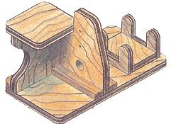
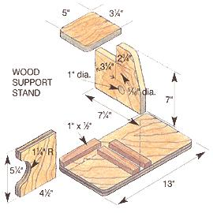
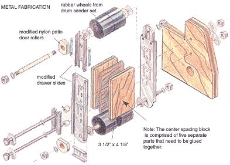
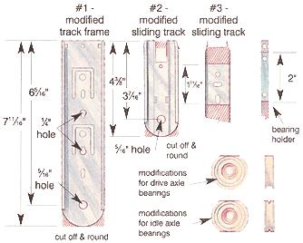
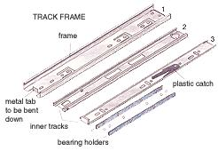
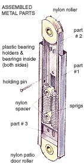

Shaving minutes off your projects.
Now that you've made a workbench, there's nothing to stop you from building our belt sander. The project involves working with metal as well as wood, but the extent of the metalwork consists solely of modifying standard hardware-store items. We've included a buyer's guide for some of the hardware products (check the materials list below).
Material List • 4 ea. 2-pc. drum sander set (rubber wheels)
• 2 pkg. 1/2" patio door rollers (nylon ball bearing)
• 2 pkg. springs (SP-9710)
· 1 pkg. drawer slides (14" liberty)
• 24" 5/ 6" all thread
• 2 ea. 1/4" x 4 1/4" bolts
• 8 ea. 1/4" finder washers
• 4 ea. 5/6" nuts
• 4 ea. 5/6" nylon washers
• 2 ea. 1/4" nuts
• 4 ea. 1/4" washers
• 1 tube Locktite
• 1 tube carpenter's glue
• 1 kit epoxy
• 24" x 24" 3/4" plywood
• 6" x 6" 1/4" spacer wood
• 18" 1/2" x 1" fir (cleats)
The wood support stand is easy to make - all you have to do is cut out the parts and glue and screw them together (see "Wood Support Stand"). Take care to be extremely accurate when you drill the holes that serve as attachment points for the metal assembly. The center spacing block is comprised of five separate parts that need to be glued together so that the channels that the two securing bolts pass through are perfectly aligned and centered (relative to the metal parts).
The cradle for your drill motor needs to match the contours of your drill motor's casing. What you want is a straight-line attachment between the chuck and the axle of the drive wheel. The cradle should bear the weight of the drill motor, keep the attachment point in line, and keep the drill motor stationary. Use only screws to attach the cradle to the stand - this will make it easy to remove the cradle if you want to use a different drill motor later.
Referring to the " Track Frame " illustrations, locate the light-gray rubber bumper on one end of the frame that holds the inner slides, pull the rubber piece off to reveal a metal tab and bend the tab down so that it is flat and in line with the rest of the frame. The inner slide assembly should slip out. Be careful to collect all the ball bearings and plastic bearing holders - you'll use some of them later. Put the frame with the bent tab aside. To disassemble the two remaining tracks, locate the black plastic catch. Push the end on the catch to one side and these two parts will disengage. Put all the pieces aside except for the frame, two inner tracks and the gray plastic bearing holders. Clean the grease from these parts and line them up. You will need to be able to differentiate between the track frame and the two slide tracks in order to choose the correct one for modification. Note the hole shapes and patterns in the metal we have labeled "1 ", "2" and "3" in the two illustrations.
Starting with the frame ("1" in the "Track Frame" illustration on page 87) drill new holes and make the cuts indicated in the "modified track frame" illustration above. File the edges round. Do same to metal parts "2" and "3". Next, cut the two plastic bearing holders down to two inches. Repeat the entire process for the second drawer slide assembly in the hardware store "kit."
Modify the four nylon patio door rollers to turn them into workable drive axle and idle axle bearings (see illustration). First, enlarge the holes of all four rollers to a 5/6" diameter. Next, flatten a side of each of the rollers that will support the axle of the drive wheel. For the two rollers that will support the axle of the sander's idler wheel you need to flatten two opposing sides. In addition, these flats have to be grooved so that they can be held firmly in place by the insides of part "2". Use a hacksaw to cut the flats and a file to shape the grooves.
Cut the axles for the drive and idler wheels from a length of 5/6" all thread. File the last 3/8" of the drive wheel axle to a triangular shape so that the square chuck jaws of the drill motor will have flat surfaces to clamp down on. Also, you'll need to epoxy the rubber wheels (from the drum sander sets) to these axles and to each other.
To keep epoxy in the right place tape off the end where the nut will go and apply epoxy to the shaft, leaving clear the other end (where the other nut will go). Slide the two wheels into their final position, and tape off the other end. (File the epoxy round after it has cured.)
After modifying all of the components, assemble the metal part of the sander by referring to the "Metal Fabrication" and "Assembled Metal Parts" illustrations. Our sander is designed to use 3" x 21" belts.
When sander is in use, it should be C-clamped to a tabletop or fixed surface. If the belt has a tendency to walk when in use, one of the shafts is not parallel or is out of alignment; adjust as necessary. When you are satisfied with the alignment, use Locktite on all of the nuts to keep them from backing off or use self-locking nuts. Happy tinkering with your newly outfitted shop!
|
 |
 |
 |
|
 |
 |
 |